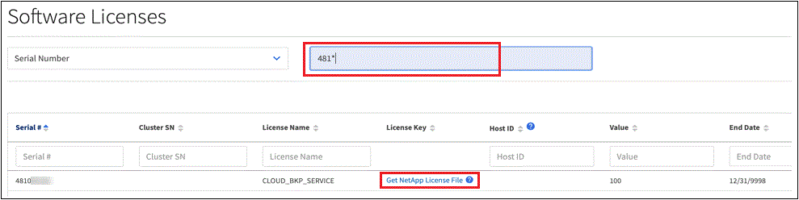
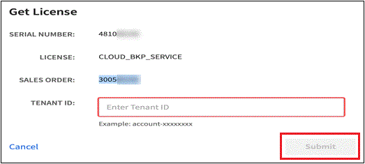

Release notes
Release notes
Set up licensing for BlueXP backup and recovery
 Suggest changes
Suggest changes
You can license BlueXP backup and recovery by purchasing a pay-as-you-go (PAYGO) or annual marketplace subscription from your cloud provider, or by purchasing a bring-your-own-license (BYOL) from NetApp. A valid license is required to activate BlueXP backup and recovery on a working environment, to create backups of your production data, and to restore backup data to a production system.
A few notes before you read any further:
-
If you've already subscribed to the pay-as-you-go (PAYGO) subscription in your cloud provider's marketplace for a Cloud Volumes ONTAP system, then you're automatically subscribed to BlueXP backup and recovery as well. You won't need to subscribe again.
-
The BlueXP backup and recovery bring-your-own-license (BYOL) is a floating license that you can use across all systems associated with your BlueXP account. So if you have sufficient backup capacity available from an existing BYOL license, you won't need to purchase another BYOL license.
-
If you are using a BYOL license, it is recommended that you subscribe to a PAYGO subscription as well. If you back up more data than allowed by your BYOL license, or if the term of your license expires, then backup continues through your pay-as-you-go subscription - there is no disruption of service.
-
When backing up on-prem ONTAP data to StorageGRID, you need a BYOL license, but there's no cost for cloud provider storage space.
30-day free trial
A BlueXP backup and recovery 30-day free trial is available if you sign up for a pay-as-you-go subscription in your cloud provider's marketplace. The free trial starts at the time that you subscribe to the marketplace listing. Note that if you pay for the marketplace subscription when deploying a Cloud Volumes ONTAP system, and then start your BlueXP backup and recovery free trial 10 days later, you'll have 20 days remaining to use the free trial.
When the free trial ends, you'll be switched over automatically to the PAYGO subscription without interruption. If you decide not to continue using BlueXP backup and recovery, just unregister BlueXP backup and recovery from the working environment before the trial ends and you won't be charged.
Use a BlueXP backup and recovery PAYGO subscription
For pay-as-you-go, you'll pay your cloud provider for object storage costs and for NetApp backup licensing costs on an hourly basis in a single subscription. You should subscribe even if you have a free trial or if you bring your own license (BYOL):
-
Subscribing ensures that there's no disruption of service after your free trial ends. When the trial ends, you'll be charged hourly according to the amount of data that you back up.
-
If you back up more data than allowed by your BYOL license, then data backup and restore operations continue through your pay-as-you-go subscription. For example, if you have a 10 TiB BYOL license, all capacity beyond the 10 TiB is charged through the PAYGO subscription.
You won't be charged from your pay-as-you-go subscription during your free trial or if you haven't exceeded your BYOL license.
There are a few PAYGO plans for BlueXP backup and recovery:
-
A "Cloud Backup" package that enables you to back up Cloud Volumes ONTAP data and on-premises ONTAP data.
-
A "CVO Professional" package that enables you to bundle Cloud Volumes ONTAP and BlueXP backup and recovery. This includes unlimited backups for the Cloud Volumes ONTAP system using the license (backup capacity is not counted against the licensed capacity). This option doesn't enable you to back up on-premises ONTAP data.
Note that this option also requires a Backup and recovery PAYGO subscription, but no charges will be incurred for eligible Cloud Volumes ONTAP systems.
-
A "CVO Edge Cache" package has the same capabilities as the "CVO Professional" package, but it also includes support for the BlueXP edge caching service. You are entitled to deploy one BlueXP edge caching Edge system for each 3 TiB of provisioned capacity on the Cloud Volumes ONTAP system. This option is available through the Azure and Google Marketplaces, and it doesn't enable you to back up on-premises ONTAP data.
Use these links to subscribe to BlueXP backup and recovery from your cloud provider marketplace:
-
Google Cloud: Go to the BlueXP Marketplace offering for pricing details.
Use an annual contract
Pay for BlueXP backup and recovery annually by purchasing an annual contract. They're available in 1-, 2-, or 3-year terms.
If you have an annual contract from a marketplace, all BlueXP backup and recovery consumption is charged against that contract. You can't mix and match an annual marketplace contract with a BYOL.
When using GCP, contact your NetApp sales representative to purchase an annual contract. The contract is available as a private offer in the Google Cloud Marketplace.
After NetApp shares the private offer with you, you can select the annual plan when you subscribe from the Google Cloud Marketplace during BlueXP backup and recovery activation.
Use a BlueXP backup and recovery BYOL license
Bring-your-own licenses from NetApp provide 1-, 2-, or 3-year terms. You pay only for the data that you protect, calculated by the logical used capacity (before any efficiencies) of the source ONTAP volumes which are being backed up. This capacity is also known as Front-End Terabytes (FETB).
The BYOL BlueXP backup and recovery license is a floating license where the total capacity is shared across all systems associated with your BlueXP account. For ONTAP systems, you can get a rough estimate of the capacity you'll need by running the CLI command volume show -fields logical-used-by-afs for the volumes you plan to back up.
If you don't have a BlueXP backup and recovery BYOL license, click the chat icon in the lower-right of BlueXP to purchase one.
Optionally, if you have an unassigned node-based license for Cloud Volumes ONTAP that you won't be using, you can convert it to a BlueXP backup and recovery license with the same dollar-equivalence and the same expiration date. Go here for details.
You use the BlueXP digital wallet to manage BYOL licenses. You can add new licenses, update existing licenses, and view license status from the BlueXP digital wallet.
Obtain your BlueXP backup and recovery license file
After you've purchased your BlueXP backup and recovery (Cloud Backup) license, you activate the license in BlueXP either by entering the BlueXP backup and recovery serial number and NetApp Support Site (NSS) account, or by uploading the NetApp License File (NLF). The steps below show how to get the NLF license file if you plan to use that method.
If you're running BlueXP backup and recovery in an on-premises site that doesn't have internet access, meaning that you've deployed the BlueXP Connector in private mode, you'll need to obtain the license file from an internet-connected system. Activating the license using the serial number and NetApp Support Site account is not available for private mode installations.
You'll need to have the following information before you start:
-
BlueXP backup and recovery serial number
Locate this number from your Sales Order, or contact the account team for this information.
-
BlueXP Account ID
You can find your BlueXP Account ID by selecting the Account drop-down from the top of BlueXP, and then clicking Manage Account next to your account. Your Account ID is in the Overview tab. For private mode site without internet access, use account-DARKSITE1.
-
Sign in to the NetApp Support Site and click Systems > Software Licenses.
-
Enter your BlueXP backup and recovery license serial number.

-
In the License Key column, click Get NetApp License File.
-
Enter your BlueXP Account ID (this is called a Tenant ID on the support site) and click Submit to download the license file.

Add BlueXP backup and recovery BYOL licenses to your account
After you purchase a BlueXP backup and recovery license for your NetApp account, you need to add the license to BlueXP.
-
From the BlueXP menu, click Governance > Digital wallet and then select the Data Services Licenses tab.
-
Click Add License.
-
In the Add License dialog, enter the license information and click Add License:
-
If you have the backup license serial number and know your NSS account, select the Enter Serial Number option and enter that information.
If your NetApp Support Site account isn't available from the drop-down list, add the NSS account to BlueXP.
-
If you have the backup license file (required when installed in a dark site), select the Upload License File option and follow the prompts to attach the file.

-
BlueXP adds the license so that BlueXP backup and recovery is active.
Update a BlueXP backup and recovery BYOL license
If your licensed term is nearing the expiration date, or if your licensed capacity is reaching the limit, you'll be notified in the Backup UI. This status also appears in the BlueXP digital wallet page and in Notifications.

You can update your BlueXP backup and recovery license before it expires so that there is no interruption in your ability to back up and restore your data.
-
Click the chat icon in the lower-right of BlueXP, or contact Support, to request an extension to your term or additional capacity to your BlueXP backup and recovery license for the particular serial number.
After you pay for the license and it is registered with the NetApp Support Site, BlueXP automatically updates the license in the BlueXP digital wallet and the Data Services Licenses page will reflect the change in 5 to 10 minutes.
-
If BlueXP can't automatically update the license (for example, when installed in a dark site), then you'll need to manually upload the license file.
-
You can obtain the license file from the NetApp Support Site.
-
On the BlueXP digital wallet page Data Services Licenses tab, click
 for the service serial number you are updating, and click Update License.
for the service serial number you are updating, and click Update License.
-
In the Update License page, upload the license file and click Update License.
-
BlueXP updates the license so that BlueXP backup and recovery continues to be active.
BYOL license considerations
When using a BlueXP backup and recovery BYOL license, BlueXP displays a warning in the user interface when the size of all the data you are backing up is nearing the capacity limit or nearing the license expiration date. You'll receive these warnings:
-
When backups have reached 80% of licensed capacity, and again when you have reached the limit
-
30 days before a license is due to expire, and again when the license expires
Use the chat icon in the lower right of the BlueXP interface to renew your license when you see these warnings.
Two things can happen when your BYOL license expires:
-
If the account you are using has a marketplace PAYGO account, the backup service continues to run, but you are shifted over to a PAYGO licensing model. You are charged for the capacity that your backups are using.
-
If the account you are using doesn't have a marketplace account, the backup service continues to run, but you will continue to see the warnings.
Once you renew your BYOL subscription, BlueXP automatically updates the license. If BlueXP can't access the license file over the secure internet connection (for example, when installed in a dark site), you can obtain the file yourself and manually upload it to BlueXP. For instructions, see how to update a BlueXP backup and recovery license.
Systems that were shifted over to a PAYGO license are returned to the BYOL license automatically. And systems that were running without a license will stop seeing the warnings.